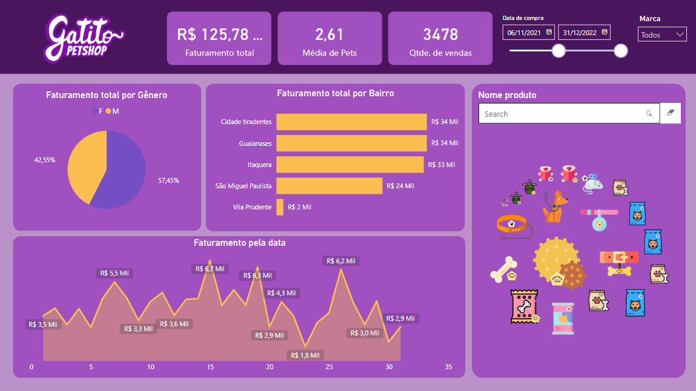

Karine Oliveira
Estudande de Engenharia da Computação e desenvolvedora Full-Stack
Java • Python • SQL • HTML • CSS • JavaScript • TypeScript
Sobre Mim
Atuo como desenvolvedora Full-Stack em ComportaMente e TintiTech, onde venho crescendo constantemente como profissional em TI. Curso Engenharia de Computação na UTFPR, onde desde que entrei me identifiquei com a área de Data Base e Develop
Projetos



Contato
karine.o.prestes@gmail.com